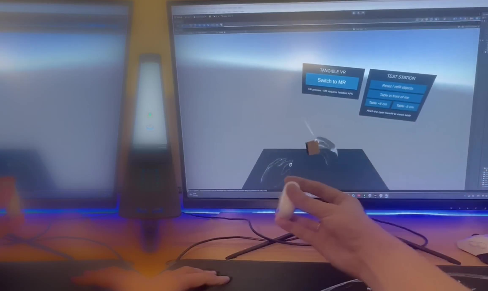

1Align it in mixed reality
In passthrough you move the virtual twin onto the real prop once. That shared frame is kept when VR resumes.
In VR your hand usually closes on air. Objects have no weight and nothing pushes back. Tracked props fix this, but every object then needs sensors, batteries or markers.
This demo turns any ordinary object into a VR prop. Mixed reality lines the real and virtual object up once; after that your real hand touches the real thing while physics moves its virtual twin.
Three steps from the headset: register the prop in mixed reality, let the physics hand make contact, then lift the real object.

In passthrough you move the virtual twin onto the real prop once. That shared frame is kept when VR resumes.
Palm and finger colliders push, enclose and lift. A pinch alone is not a grab; contact decides.
Real contact gives the touch. Unity gives the twin its mass, gravity and release speed.
| You do | The system does | Where | |
|---|---|---|---|
| Align | Drag the twin onto the real prop | Keeps one shared coordinate frame | Passthrough |
| Touch | Reach for the object | Compound hand colliders register contact | VR |
| Grab | Close your hand around it | Grasp needs enclosure or opposed contact | VR |
| Move | Lift and carry the real prop | Twin follows; mass and gravity stored | VR |
| Release | Let go | Physics restored with release velocity | VR |
Everything runs on the PICO 4 Ultra; no computer is needed. The work is split into three replaceable layers: registration (where the prop is), grasp (when it is held) and physical response (how it moves).
The drawn hand and the physics hand are separate, so physics never makes your hand feel laggy.
Builds both hands from tracked joints as one kinematic body.
Records which part of the hand touches which object.
Tells a deliberate hold from an accidental bump.
Stores and restores gravity and mass around a grab.
Runs physics ahead to draw the predicted path.
Directions this prototype opens up. None of them are tested yet.
Practise with the actual tool in hand inside a virtual scene.
Real reach and grip, with virtual guidance and feedback.
Hold an object and see its forces and future motion.
Test a tangible idea before building tracked hardware.